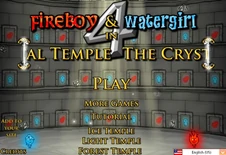
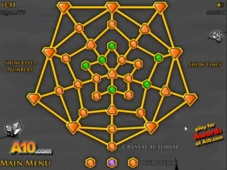

| Főoldal |
|---|
| Erdei templom |
| Fény templom |
| Jég templom |
| Kristály templom |
| Kvíz oldal |
| Kontakt oldal |
A Fireboy és Watergirl 4 in The Crystal Temple-ben a sorozat negyedik játéka.
A megjelenés dátuma 2013. március 29.
A főmenü:

39 szint van, amelyek 25 normál szintből, 5 egyidejűleg tervezett szintből és 9 fehér gyémánt szintből állnak. Normál szinten különféle rejtvényeket kell megoldani, mint például karok, nyomók, dobozok, fényérzékelők és tükrök, jég/hó és fagyasztó/olvasztó lámpák, az újonnan bevezetett kristály teleporterek stb. és néhány gyémánt, amit össze kell gyűjteni, bár nem szükséges a szint teljesítéséhez, de a végén növeli az értékelést. Az egyidejűleg tervezett pályákon mindkét karaktert szimmetrikusan kell egyszerre mozgatni, általában nincs sok rejtvény és csak akadályok vannak. A fehér gyémánt szinten van egy fehér gyémánt, amelyet össze kell gyűjteni a szint teljesítéséhez, a normál piros és kék gyémántok mellé a minősítés növelése érdekében, nagyjából megegyezik a normál szinttel, de van egy gyémánt, amelyet kötelező össze kell gyűjteni, ahhoz, hogy átjuthass a szinten.
A szint kiválasztása.

Fireboy csúszik jégen és havon, de nem tud felmászni a havas lejtőkre. Watergirl-t lelassítja a jég és a hó, de fel tud mászni a havas lejtőkön.